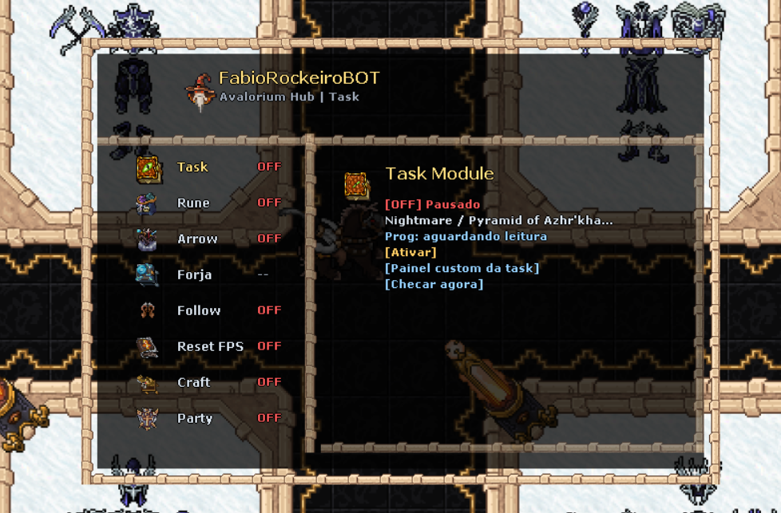
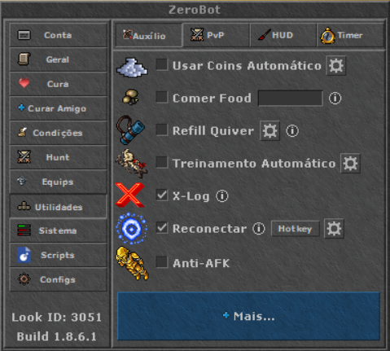
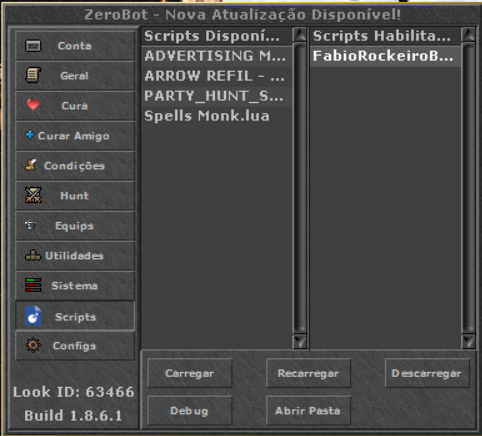

Como usar
O script adiciona ícones na tela do ZeroBot. Basta clicar no ícone correspondente e arrastar pela tela para mudar ele de lugar; ao clicar nele, o painel exibe as opções de configuração.
Ele foi pensado para ficar discreto durante a hunt: pode ser minimizado, reposicionado e aberto só quando você quiser alterar alguma opção. Todos foram otimizados pelo tutor Fábio Rockeiro.
Funções incluídas
Automação focada nas rotinas mais repetitivas do Paladin, dos sistemas de task, runas, forja, party, follow e RESET FPS.
Arrow Refil
Compra automaticamente as flechas da vocação Paladin quando o estoque configurado estiver acabando.
Task Book
Entrega e renova automaticamente a task selecionada, mantendo o ciclo da task sem precisar reconfigurar tudo.
Rune Refil
Compra automaticamente uma backpack da runa selecionada quando suas runas estiverem acabando.
Auto Forja
Automatiza funções de Forja, como aumentar nível de Dust, Slivers e Exalted Core.
Follow
Mantém o personagem seguindo o alvo configurado para facilitar deslocamento e suporte durante a hunt.
Reset FPS
Executa o fluxo de reset do cliente para aliviar quedas de FPS durante hunts longas.
Auto Party
Ajuda a automatizar convites e organização da party para manter o grupo pronto com menos cliques.
RESET FPS
Script para aliviar o cliente durante a hunt: mesmo com Battle ativo, ele usa a função de CTRL+L, volta para a tela do personagem e efetua login novamente para resetar o FPS.
Para funcionar corretamente, deixe as opções X-Log e Reconectar ativas dentro do ZeroBot.

Onde colocar e como carregar
Depois de baixar, coloque o arquivo desejado dentro da pasta Documentos/ZeroBot/Scripts.
- Abra a janela do ZeroBot.
- Vá no menu Scripts.
- Selecione o arquivo FabioRockeiroBot.lua.
- Clique no botão Carregar.
Se o script não aparecer na lista, confira se ele está realmente dentro da pasta Documentos/ZeroBot/Scripts e clique em Recarregar.

Baixar script
Baixe o arquivo FabioRockeiroBot.lua e carregue no ZeroBot.